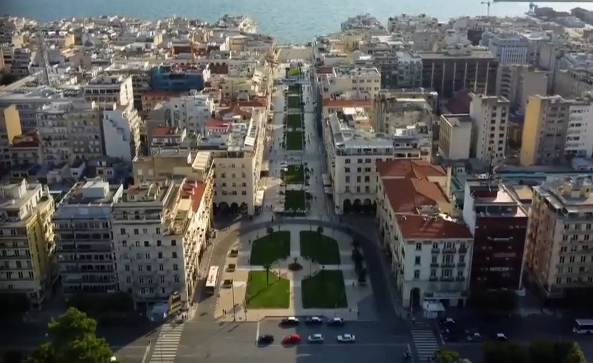
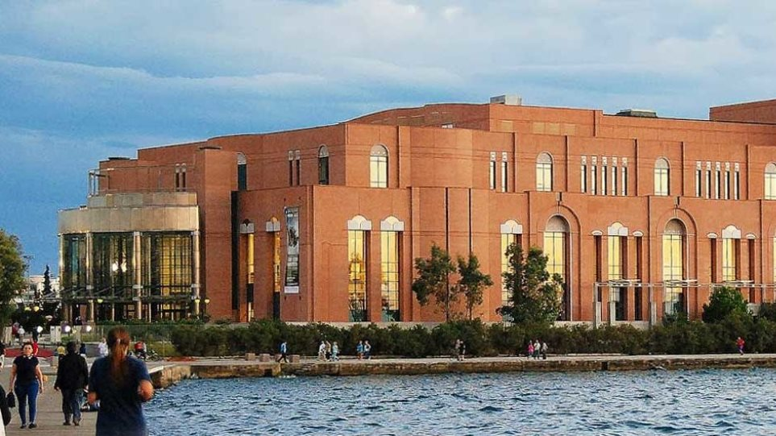
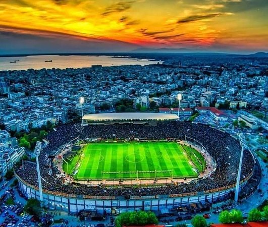
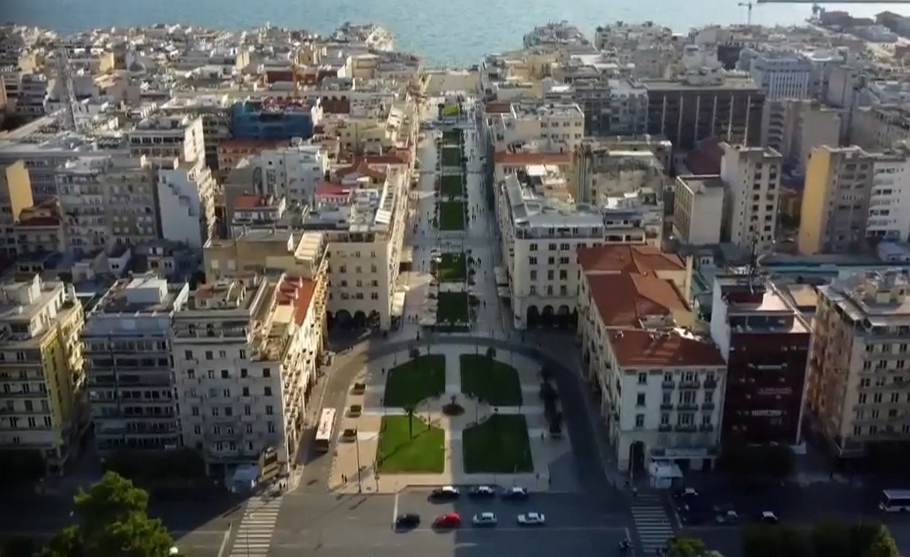
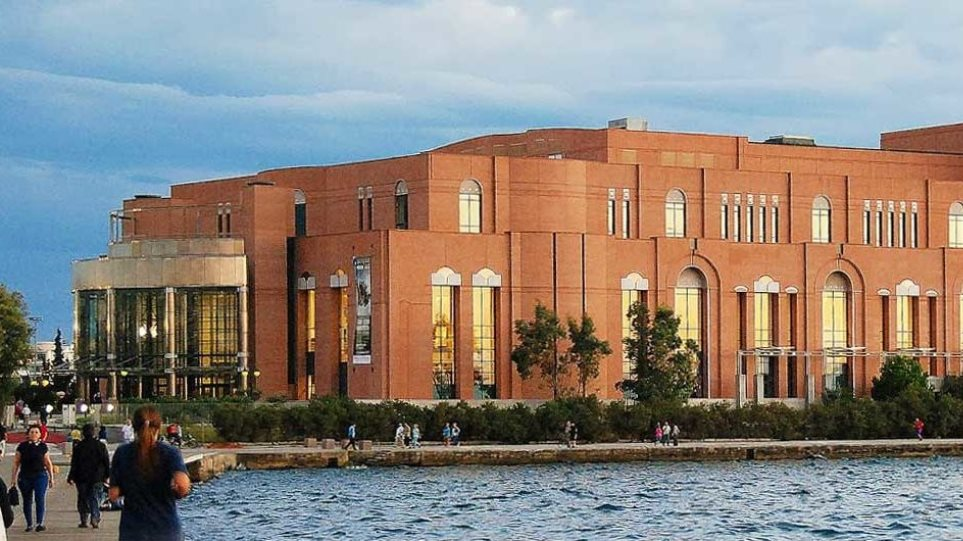
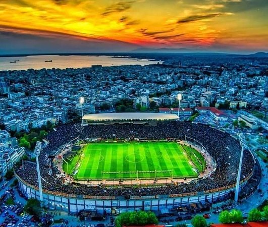

Θεσσαλονίκη
Η Θεσσαλονίκη είναι η μεγαλύτερη σε έκταση και πληθυσμό πόλη της Μακεδονίας, καθώς είναι και πρωτεύουσά της, και δεύτερη μεγαλύτερη στην Ελλάδα. O μόνιμος πληθυσμός του κεντρικού δήμου της Θεσσαλονίκης ανέρχεται σε 317.778 κατοίκους, και ο μόνιμος πληθυσμός της Περιφερειακής Ενότητας Θεσσαλονίκης ανέρχεται σε 1.092.919 κατοίκους.
 





Αποτελεί την πρωτεύουσα του Νομού Θεσσαλονίκης, την έδρα του Δήμου Θεσσαλονίκης και της μητροπολιτικής περιοχής της Θεσσαλονίκης, του πολεοδομικού συγκροτήματος Θεσσαλονίκης καθώς και την έδρα της Περιφέρειας Κεντρικής Μακεδονίας και της Αποκεντρωμένης Διοίκησης Μακεδονίας-Θράκης.Πολιούχος της πόλης είναι ο μεγαλομάρτυρας Άγιος Δημήτριος ο Μυροβλήτης. Είναι γνωστή επίσης ως Νύμφη του Θερμαϊκού αλλά και Συμπρωτεύουσα.
Ιδρύθηκε το 316 π.Χ. από τον Μακεδόνα στρατηγό Κάσσανδρο, που προερχόταν από τη Δυναστεία των Αντιπατριδών και ήταν ένας από τους διαδόχους του Μεγάλου Αλεξάνδρου. Ο Κάσσανδρος της έδωσε το όνομα της συζύγου του και ετεροθαλούς αδελφής του Μεγάλου Αλεξάνδρου, Θεσσαλονίκης.
Ο Κάσσανδρος υπήρξε διοικητής της Μακεδονίας κατά τη διάρκεια της εκστρατείας του Μεγάλου Αλεξάνδρου στην Ανατολή. Διαδραμάτισε σημαντικό ρόλο στην πολιτική ζωή της περιοχής μετά τον θάνατο του Μεγάλου Αλεξάνδρου και ανακηρύχθηκε βασιλιάς της Μακεδονίας το 306 π.Χ.
Μετά την ίδρυση της πόλης, την οχύρωσε με τείχη τα οποία απέτρεπαν εχθρούς από το να την κυριεύσουν, οι δε πρόσθετες βελτιώσεις των τειχών ανά τους αιώνες καθορίζουν την φυσιογνωμία της Θεσσαλονίκης μέχρι και σήμερα.